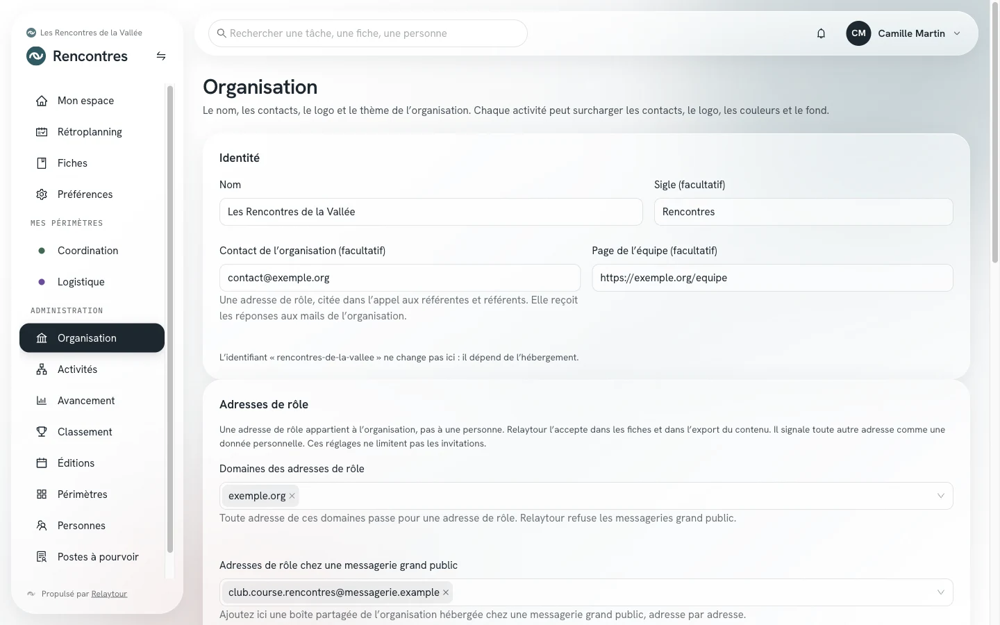
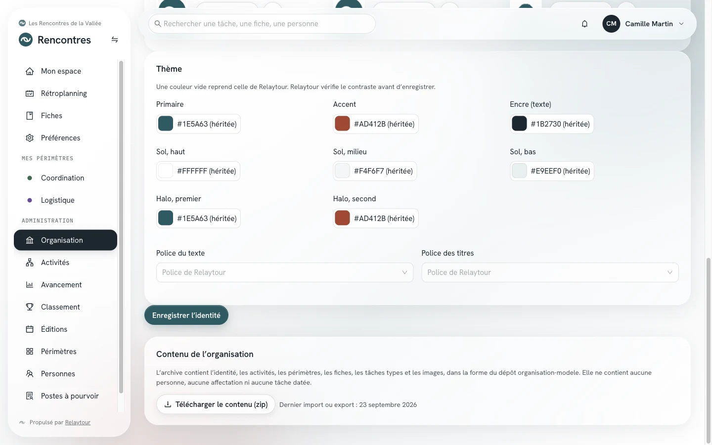
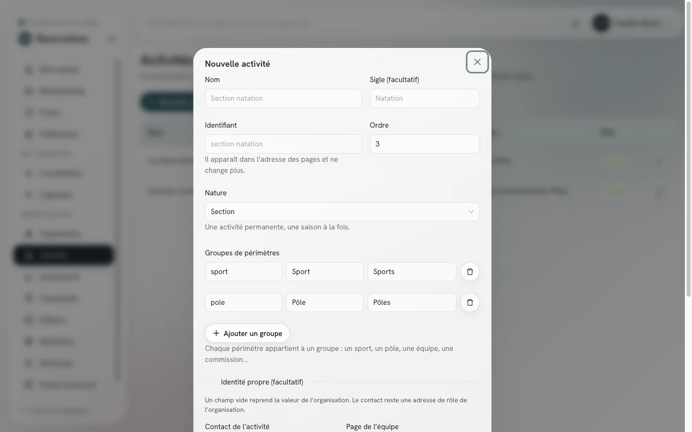
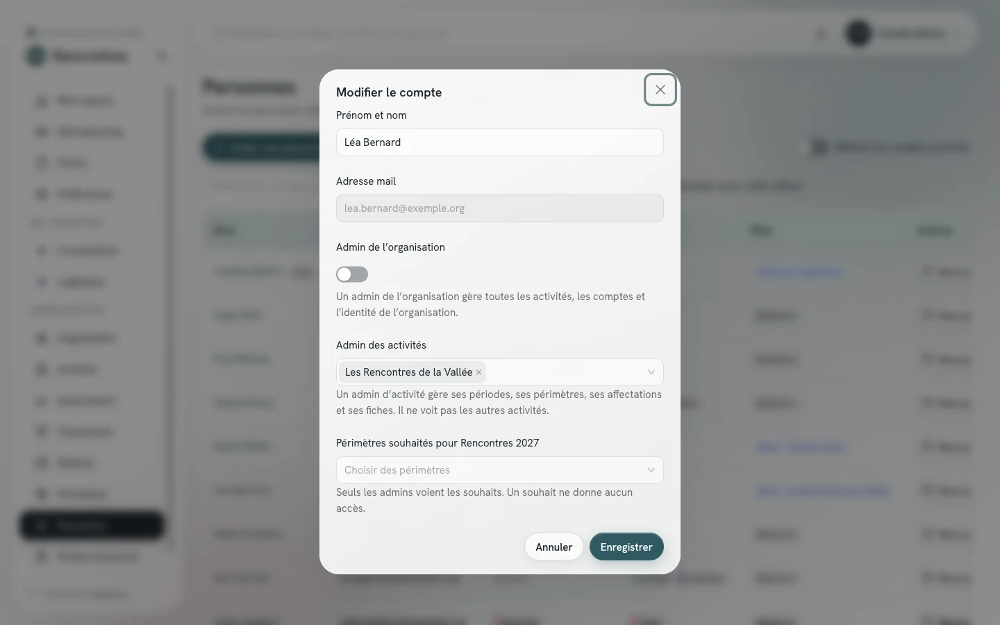

Vous gérez ce qui dépasse une activité : l'identité de l'organisation, la liste des activités, les comptes et les rôles. C'est le niveau du bureau. Vous administrez aussi toutes les activités, sans avoir besoin d'y être nommé·e.
Ce mode d'emploi ne décrit que les fonctions propres à ce rôle. Le pilotage courant d'une activité (périodes, périmètres, affectations, avancement) figure dans le mode d'emploi de l'admin d'activité.
Point de départ
Où se trouvent vos écrans
L'entrée Organisation ouvre le groupe « Administration » du menu. Elle n'apparaît que pour votre rôle. Vos autres leviers se trouvent sur les pages Activités, Personnes et Rédaction, sous forme de champs et de boutons que les admins d'activité ne voient pas.
Vos écrans
Ce que vous seul·e pouvez faire
Identité de l'organisation
/<activité>/admin/organisation
La page réunit le nom, les contacts, le logo et le thème de l'organisation. Chaque activité peut ensuite surcharger les contacts, le logo et les couleurs pour elle-même.
IdentitéLe nom, le sigle, le contact de l'organisation et la page de l'équipe. Le contact reçoit les réponses aux mails.
Adresses de rôleLes domaines admis pour les adresses citées dans les fiches, et les boîtes partagées hébergées chez une messagerie grand public.
Logo et faviconLe logo PNG, sa variante SVG et le favicon.
ThèmeLes couleurs et les deux polices. Relaytour vérifie le contraste avant d'enregistrer, et une couleur laissée vide reprend celle de Relaytour.

Page Organisation, sur l'organisation d'exemple livrée avec Relaytour.
Contenu de l'organisation
/<activité>/admin/organisation
L'application est la source de vérité du contenu. Le panneau situé en bas de la page Organisation indique la date du dernier import ou export, et signale si des admins ont modifié le contenu depuis.
Télécharger le contenu (zip)Récupérer l'identité, les activités, les périmètres, les fiches et les tâches types dans une archive.
L'archive ne contient aucune personne, aucune affectation ni aucune tâche datée. Téléchargez-la avant tout import : un import refuse d'écraser des modifications plus récentes.

Le panneau Contenu de l'organisation, sur l'organisation d'exemple.
Créer et archiver une activité
/<activité>/admin/activites
Vous voyez toutes les activités de l'organisation, y compris celles que vous n'administrez pas nommément. Deux commandes vous sont réservées.
Nouvelle activitéCréer un événement, une section ou une instance, avec son identifiant, sa nature et ses groupes de périmètres.
ArchivéeArchiver une activité terminée. Elle disparaît du sélecteur et reste consultable.
L'identifiant apparaît dans l'adresse des pages et ne change plus après la création.

Création d'une activité, sur l'organisation d'exemple.
Comptes et rôles
/<activité>/admin/personnes
Un compte est commun à toute l'organisation, et une même personne peut appartenir à plusieurs organisations. Vous seul·e touchez au compte lui-même et aux rôles.
Admin de l'organisationDonner ce rôle à un autre membre du bureau. Vous ne pouvez pas vous le retirer vous-même.
Admin des activitésNommer les personnes qui piloteront une activité. Elles ne voient pas les autres activités.
Prénom et nomCorriger le nom d'un compte existant.
ArchiverFermer l'accès d'une personne qui quitte l'organisation. Elle est déconnectée, son historique reste conservé.
RestaurerRouvrir l'accès d'un compte archivé.
Le mail d'invitation contient le lien vers le mode d'emploi du rôle de la personne. Après une nomination, renvoyez l'invitation pour lui transmettre le mode d'emploi de son nouveau rôle.

Modification d'un compte, sur l'organisation d'exemple. La personne est fictive.
Droit sur toutes les fiches
/<activité>/admin/redaction
Vous voyez tous les droits de rédaction de l'organisation, et vous disposez d'une option supplémentaire dans la liste des fiches concernées.
Toutes les fiches, communes comprisesConfier la rédaction des fiches communes à une personne, par exemple la coordination.
Un admin d'activité n'accorde un droit que sur les périmètres de son activité.
Écran Rédaction des fiches, sur l'organisation d'exemple.
Bon à savoir
Quatre points de vigilance
Exporter avant d'importer
Les modifications faites dans l'application priment sur le dossier de contenu. Téléchargez l'archive avant toute réimportation, sinon l'import s'arrête pour protéger votre travail.
Un compte, plusieurs organisations
Le nom et l'archivage appartiennent au compte, commun à toutes ses organisations. Archiver un compte ferme donc l'accès partout.
Les adresses de rôle protègent les personnes
Relaytour refuse les coordonnées personnelles dans les fiches. N'ouvrez les domaines admis qu'à des boîtes partagées de l'organisation.
La visibilité reste cloisonnée
Une personne voit une activité si elle l'administre ou si elle y est affectée. Nommer un admin d'activité ne lui ouvre rien d'autre.
Hors de l'espace organisateur
La création de l'organisation, ses limites, sa suspension et l'export complet de ses données appartiennent à la personne qui exploite le serveur. Ces actions passent par des scripts d'administration, pas par cet écran.
Les autres rôles
Les autres modes d'emploi
Vous administrez aussi chaque activité, et vous utilisez les écrans communs à toutes les personnes. Ces deux modes d'emploi complètent celui-ci.